Simulation Report: canonical-disk-mi-calibration-homogeneous-srate30-tend7p0-v1
Generated 2026-04-07T19:36:10.319016+00:00 from commit 6af6b54.
This report summarizes one run for execution and human-in-the-loop sanity review. Use the execution checks, histories, and artifacts as the primary truth surface.
Status
fail
1 run(s), 1 fail signal(s), 6 warning signal(s).
Comparison Context
Single-Run Review
Current runs: 1. Baselines: 0.
Default policy: correctness drift fails, performance drift warns.
Execution
incomplete
Comparison validity: invalid
Warnings
- None
Interpretation
Read execution status first. If execution is incomplete, numerical deltas are descriptive only and should not be treated as validated physics drift. For baseline comparisons, timing and scenario-dependent differences may be expected even when correctness checks pass.
Scenario Reading
Canonical Disk Homogeneous Source-Driven Mass Increase Tend0p02 Pilot (achieved)
Mechanisms: deformation:mass_increasingmechanism:source_drivensource:homogeneousgeometry:diskcanonical:diskhydraulic:closedpreferred_hydration
This canonical source-driven case keeps the hydration-coupled baseline fixed while pressure-scaled source terms inject additional mass homogeneously across the full domain. No linked paired tissue+lumen source model is active.
Model setup. Canonical disk geometry with four main lumens of radius 0.15 at the cardinal directions and four detached diagonal microlumens of radius 0.14 at +/-0.22 in the interstitial core. Kinematic growth is neutralized (g=1), the hydration-coupled baseline is retained, and pressure-scaled source terms are localized by source_region.
Expected dynamics. The homogeneous source case is the long-horizon reference for judging whether tissue-only or lumen-only localization creates a distinct coarsening and deformation path under the same total source strength.
Read first: lumen_n_components, lumen_total_volume_def, lumen_largest_fraction, area_ratio, max_u, theta_eq_range, storage_strain_range
Where to observe it.
- Use the trend plots to inspect area_ratio, max_u, and the derived range metrics.
- Use the montage/frame artifacts to see whether deformation localizes near the lumen or the outer wall.
Expected vs Achieved
| Role | Source | Label | Execution | Final Time | Accepted Steps |
|---|---|---|---|---|---|
| achieved | current | canonical-disk-mi-calibration-homogeneous-srate30-tend7p0-v1 | incomplete | 0.288026 | 593 |
Run Table
| Label | Role | Scenario | Backend | Geometry | Solver | Restart | Status | Wall Time | DoF | Cells | Mass | Ratio | min_J |
|---|---|---|---|---|---|---|---|---|---|---|---|---|---|
| canonical-disk-mi-calibration-homogeneous-srate30-tend7p0-v1 | achieved | Canonical Disk Homogeneous Source-Driven Mass Increase Tend0p02 Pilot | snes | disk | monolithic | startup | fail | 76779.9 | 18342 | 2972 | 3.65472 | 1.02483 | 0.0190922 |
Status Checks
canonical-disk-mi-calibration-homogeneous-srate30-tend7p0-v1 (achieved)
- pass Accepted metrics rows present
- pass Run advanced beyond the initial state
- fail Run reached target time
- pass Final accepted step converged
- pass Final min_J is positive
- pass Post-processing completed
- warn 48 failed attempt row(s) recorded before acceptance/termination.
- warn Skipped analyze_lumen_components for interrupted WIP salvage; generated visual media only.
- warn Run status: failed / partial.
- warn Interruption reason: solver_nonconvergence.
- warn Interrupted after ETA review showed multi-day to multi-week completion times under reduced-dt regimes, with multiple solver failures already present. Preserving partial fields for WIP comparison.
- warn Run terminated before salvage because the campaign builder recorded a solver failure.
Trends
Area Ratio
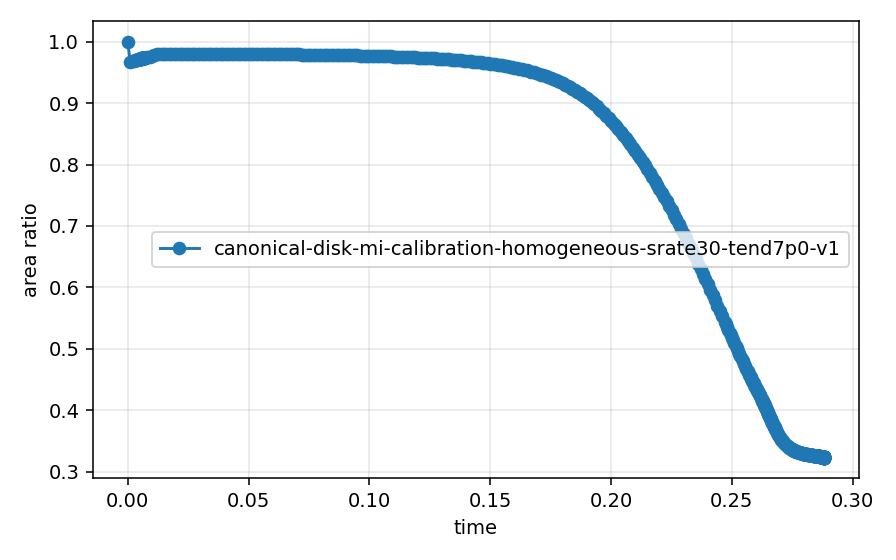
Max Displacement
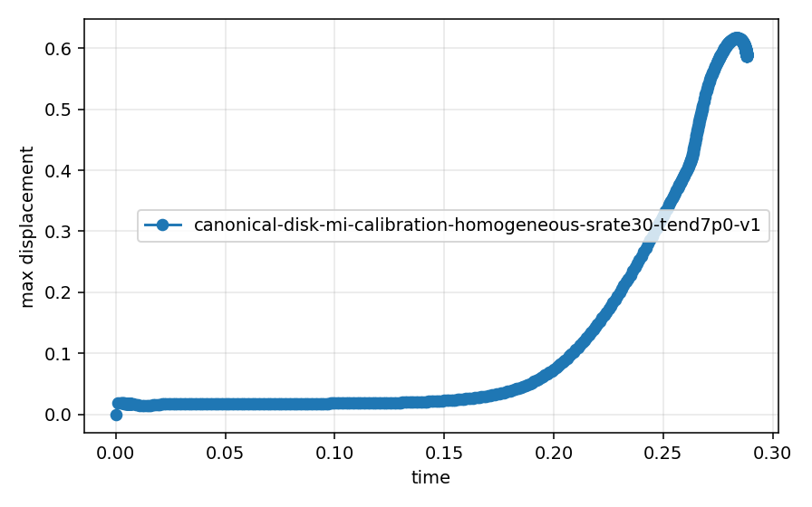
Lumen Ratio
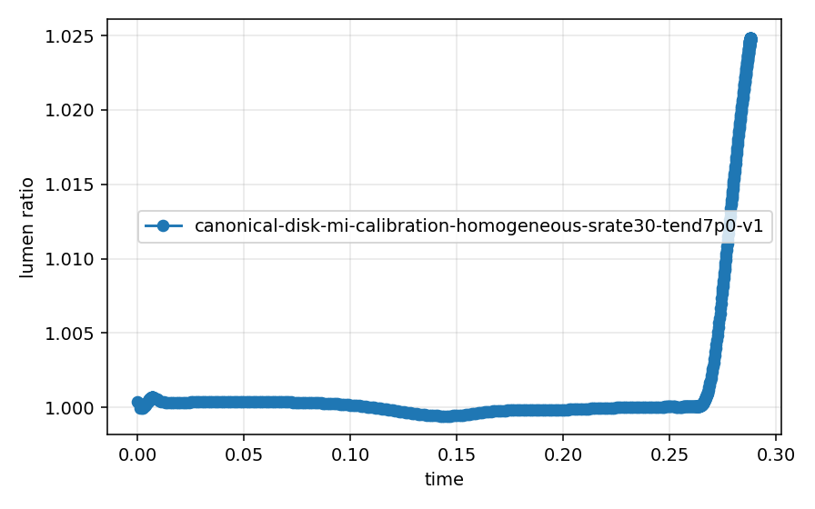
Total Energy (P-Form)
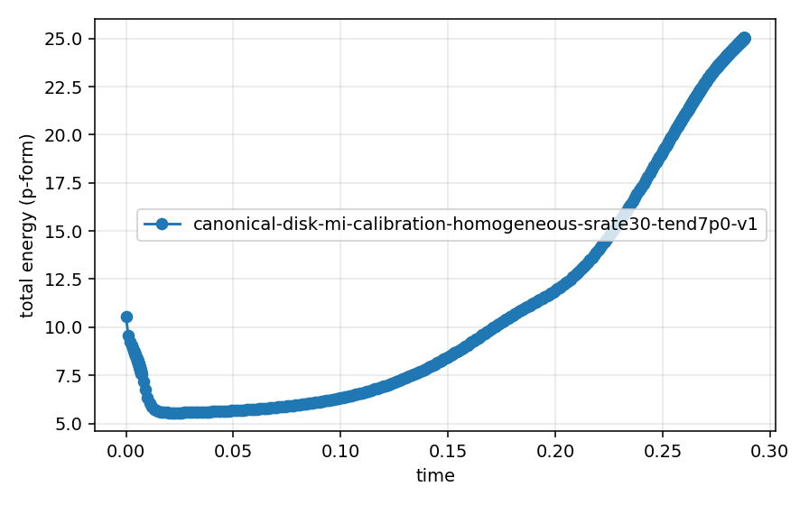
Theta-Form Energy
Cross-Form Energy
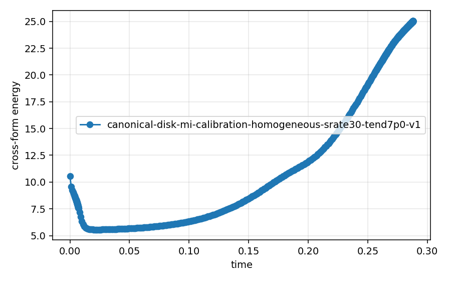
Mass
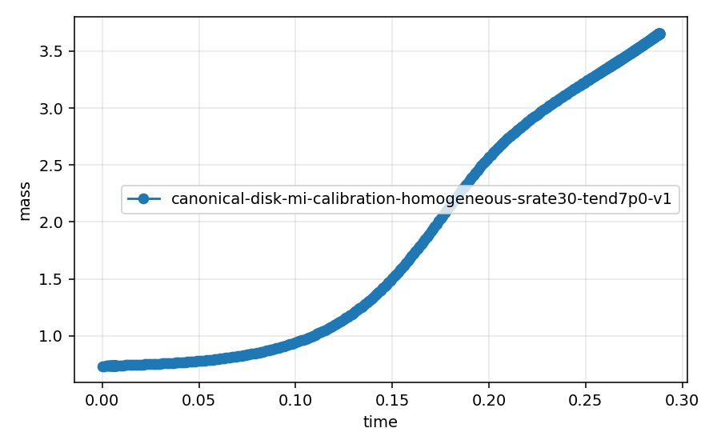
Split Iterations
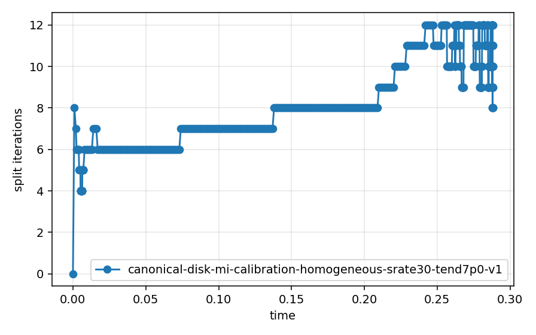
Mesh Cells
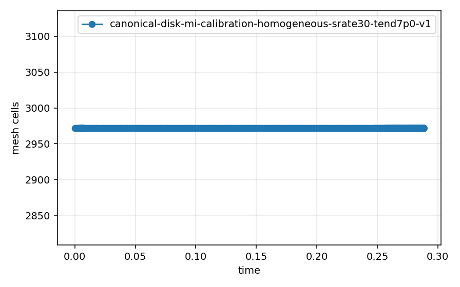
Flow Potential Range
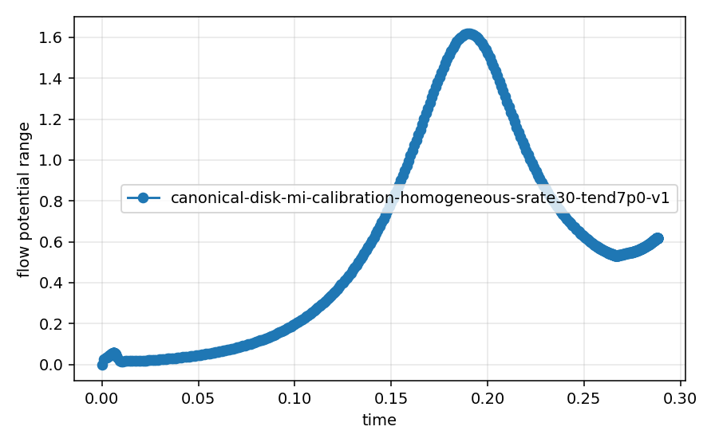
Effective Pressure Range
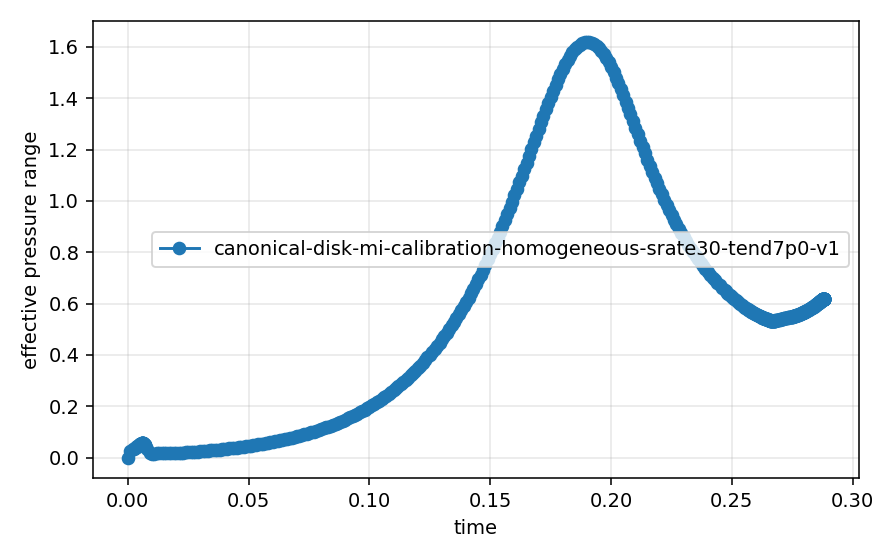
Theta_Eq Range
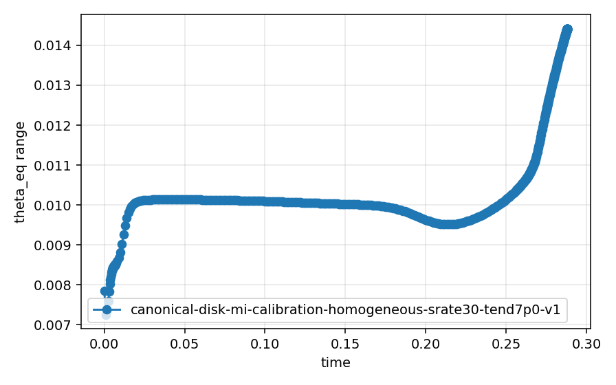
Storage Strain Range
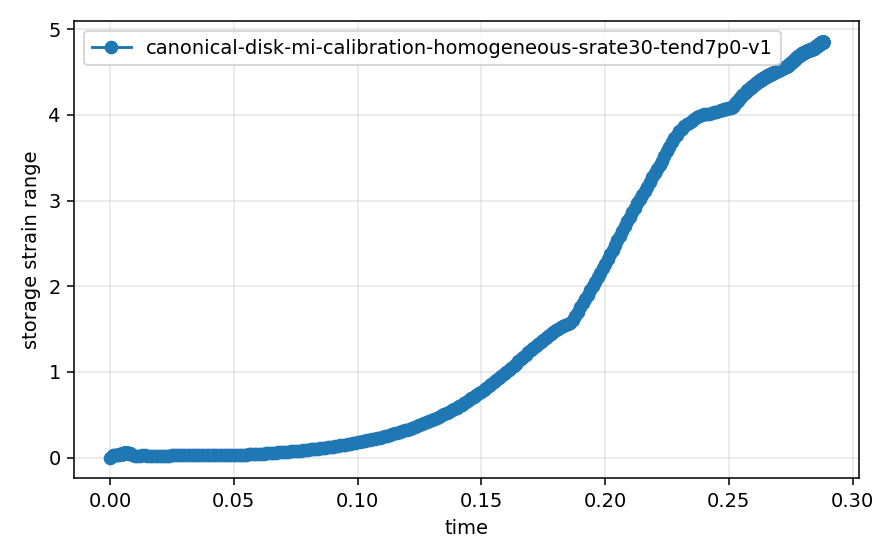
Wall Time
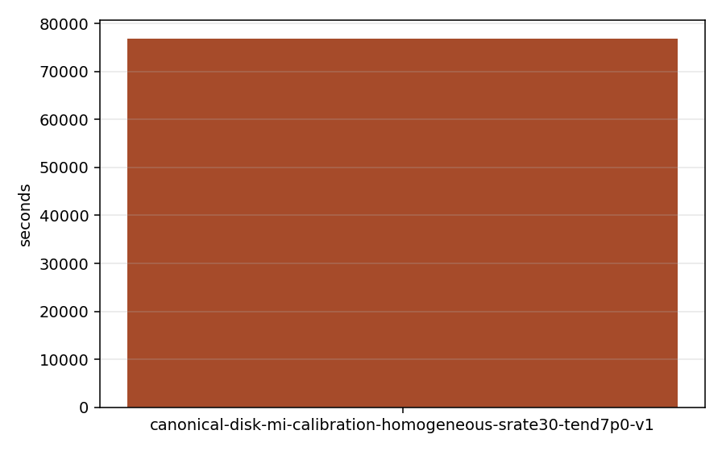
Artifacts
canonical-disk-mi-calibration-homogeneous-srate30-tend7p0-v1
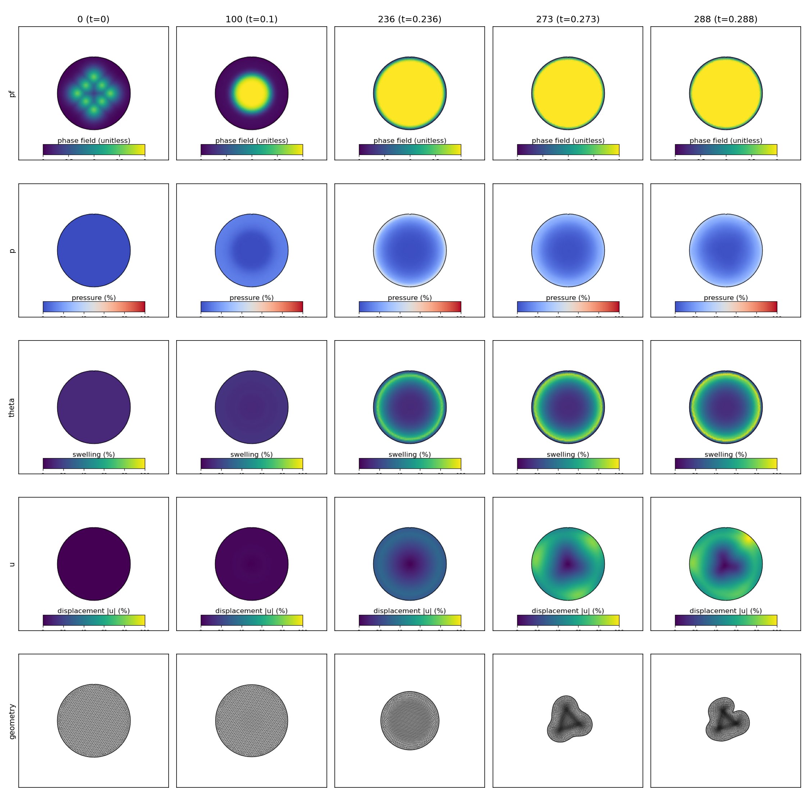
{kind=link}
{kind=link}